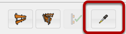
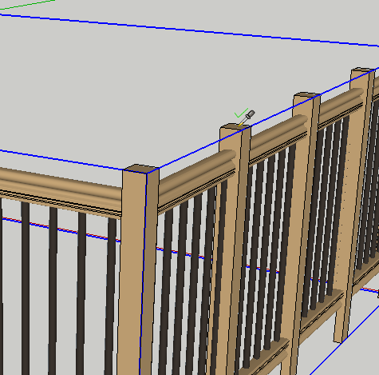
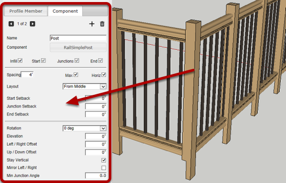

If there is an Assembly below the cursor (in the active context), it will become highlighted and the cursor will show a checkmark. Click the Assembly to load the attributes into the Assembler Dialog.

Typically before editing the attributes of an existing assembly, you would first load the existing attributes as shown above. Then, you can make changes and use the 'Apply Attributes' button to modify the assembly.